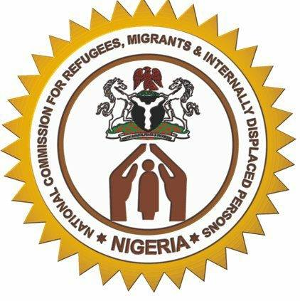
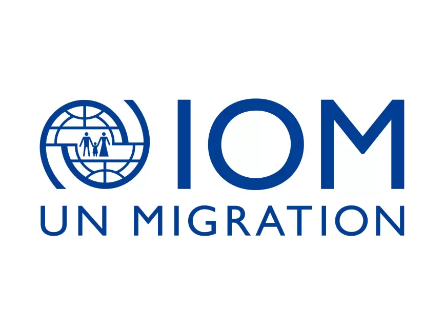

Key Partners
Strategic institutional collaborators supporting the dialogue

National Commission for Refugees, Migrants and Internally Displaced Persons (NCFRMI)
Federal Government Lead Agency on Migration Governance
NCFRMI is the Federal Government's lead agency on migration governance, providing the institutional framework for the protection and welfare of refugees, migrants, and internally displaced persons in Nigeria. The Commission plays a pivotal role in coordinating national migration policy implementation, establishing state-level migration coordination structures, and ensuring alignment with international standards including the Global Compact for Safe, Orderly and Regular Migration. Under the leadership of Federal Commissioner Hon. Tijani Aliyu Ahmed, NCFRMI drives the technical backbone of Nigeria's migration governance architecture, overseeing comprehensive migration data systems, refugee protection protocols, and the socio-economic reintegration of returnees. As a key partner to SEMD 2026, NCFRMI ensures that dialogue outcomes are anchored in federal policy frameworks and contribute to the strengthening of sub-national migration governance across the South East region.

International Organization for Migration (IOM)
United Nations Migration Agency
The International Organization for Migration brings global expertise and technical support on migration governance, assisted voluntary return, and reintegration programs to the South East Migration Dialogue. IOM contributes to data collection and analysis on migration trends, supports capacity building for state and non-state actors, and facilitates international best practice sharing. The organization's Migration Governance Framework (MiGOF) provides the analytical lens through which the dialogue assesses state-level migration governance readiness. IOM's partnership ensures that the dialogue's outcomes are aligned with international standards and commitments, including the Global Compact for Safe, Orderly and Regular Migration.

Civil Society Network on Migration and Development (CSOnetMADE)
Convener of the South East Migration Dialogue
CSOnetMADE is Nigeria's premier civil society platform dedicated to migration governance advocacy, policy influence, and community empowerment. The network brings together civil society organizations, academic institutions, research centers, and individual experts working on migration and development issues across Nigeria's six geopolitical zones. CSOnetMADE has been at the forefront of advocating for the domestication of the National Migration Policy at the sub-national level, the establishment of state-level migration coordination structures, and the protection of migrants' rights. Through its thematic working groups on labour migration, returns and reintegration, diaspora engagement, and counter-trafficking, CSOnetMADE provides the intellectual and organizational backbone for the South East Migration Dialogue, ensuring that civil society voices are central to migration policy formulation and implementation.